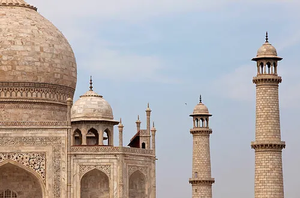

Taj Mahal, India
Constructed: 1632–1653
Built by Mughal Emperor Shah Jahan as a mausoleum for his favorite wife, Mumtaz Mahal, the Taj Mahal took over 20,000 workers and roughly 22 years to complete. Its white marble subtly shifts color throughout the day, pink at dawn, gleaming white at noon, golden under moonlight, an effect the original architects seem to have planned deliberately. Precious stones inlaid into the marble form intricate floral patterns using a technique so precise the seams are barely visible even up close. It remains one of the most photographed buildings in the world for good reason.
Type: Mughal Architecture